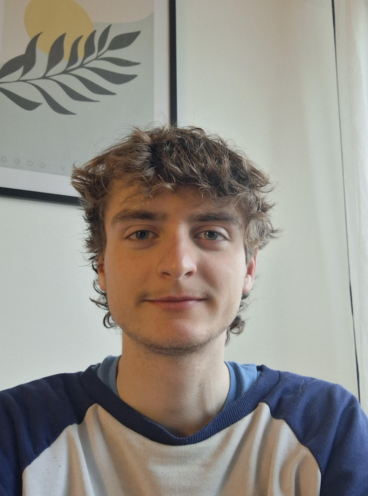

2025 Google Summer of Code and SciML's Summer Fellowship!
Interested in what work is going on over the summer? Meet our top students who are describing their fellowship and GSoC projects!
Astitva Aggarwal: Multidimensional SDE PINN solvers
Stochastic dynamical systems are crucial in modeling complex behavior across science and engineering, particularly under randomness or environmental perturbations. My project aims to extend the NeuralPDE.jl library within the SciML ecosystem by documenting the existing SDE PINN solver and implementing support for multidimensional Stochastic Differential Equations (SDEs) using the Kosambi-Karhunen-Loève (KKL) expansion. This transforms stochastic problems into deterministic rough path ODEs, making them solvable with standard PINN techniques. This also generalizes to Stochastic Partial Differential Equations (SPDEs) using Polynomial Chaos Expansion (PCE), enabling simulation of spatially distributed stochastic phenomena.
About me: I’m Astitva Aggarwal, a Computer Engineering graduate from VJTI, Mumbai. I am passionate about computational mathematics and scientific machine learning and look forward to improving my knowledge about stochastic systems. Being part of the Numfocus-SciML GSoC 2025 program, I look forward to contributing to open-source software, and collaborating with a community passionate about scientific computing.

Sonvi Jain: Rewriting the NeuralPDE.jl parser
NeuralPDE.jl is a Julia package which consists of neural network solvers for partial differential equations using PINNs. The current code generation process relies on pre-built kernels, which are difficult to debug and limit flexibility. The goal of my project is to rewrite the loss function generator so that it produces Symbolics.jl expressions. These expressions can be analyzed and used to generate code via build_function, making the process more transparent and extensible. By using ModelingToolkit.jl to define differential equations and generate loss functions symbolically, NeuralPDE.jl will be able to support a wider range of systems and offer greater flexibility for users.
About me: I’m , a third-year undergraduate student at IGDTUW in Delhi, India. I first stumbled upon Julia at age 15, during the COVID lockdown, when the MIT Introduction to Computational Thinking course was livestreamed on YouTube and featured 3Blue1Brown. After a few years, I found my way back to Julia through a research project at my university, which introduced me to the SciML community. I’m excited to contribute to the ecosystem that first inspired my love for scientific computing, and I’m looking forward to learning and growing alongside this amazing community!

Siva Sathyaseelan D N: Extending StochasticDiffEq.jl with τ-Leap Algorithms for Jump Process Simulation
The purpose of this project is to extend StochasticDiffEq.jl, by tau-leaping algorithms to approximate jump processes efficiently. Jump processes model discrete, random state changes in systems like chemical reactions or disease spread, vital in systems biology with small molecule counts. JumpProcesses.jl in SciML uses the Gillespie algorithm for exact simulation, now supporting spatial systems, but it’s slow for large simulations. Tau-leaping handles multiple events per time step, balancing cost and accuracy for large or mixed-rate systems, unifying exact and approximate methods.
About me: Hello! I’m Siva Sathyaseelan D N, a pre-final year B.Tech + M.Tech Industrial Chemistry student at IIT BHU, Varanasi, India. With a deep-rooted passion for software development and scientific computing, I thrive at the intersection of code and real-world problem-solving. For two years, I’ve engaged in open-source work across scientific simulation, blockchain, and cloud-native technologies, through hobby projects, hackathons, internships, and an LFX mentee. I’m thrilled to contribute to SciML, leveraging my Julia experience and interest in numerical methods for this SciML Fellowship to enhance StochasticDiffEq.jl with advanced tau-leaping algorithms.

Paras Puneet Singh: Multistart Optimization and ODE Solvers as Optimizers
The purpose of this project is to create a generalized implementation of and improve the various available ones to be compatible with all solvers supported by Optimization.jl.This is to be done through the EnsembleProblem interface leveraging the already available parallelization infrastructure. Multistart optimization strategies provide a powerful approach to tackling these problems by running local solvers from multiple initial points in the parameter space. Along with the interface, I would also like to explore a few other multi-start optimization methods such as Ant Colony Optimization(ACO), MDGOP, etc. I will also be working on Particle Swarm Optimization and OptimizationODE.jl package for ODE solvers for optimization.
About me: I am Paras Puneet Singh, just finished my third year of undergraduate studies at BITS Pilani Hyderabad Campus. My passion lies at the intersection of Computer Science and mathematics, with a growing interest in machine learning (ML) and its practical implementations. In my recent endeavors, I have delved into various projects including the development of a Multi-Modal Zero-Shot Learning model for Time Series using LLMs, a Clustering algorithm without the need for specifying number of clusters(it works for almost all data: dense, sparse and structured), a CRUD website, a landmark detection ML project, and an API-based AI summarizer website. These projects have not only honed my skills but have also fueled my passion for learning. I am a fast and resolute learner, eager to explore the depths of computer science. My journey has led me to NumFOCUS again, where I am thrilled to be joining a diverse and supportive team. Here, I will be contributing to an open-source project focused on optimization, leveraging my skills and enthusiasm to make meaningful contributions to the field. Having worked last year as well I have learnt from my mistakes and am hoping to prevent some other newcomers from repeating it. Please reach out to a fellow beginner for discussion any time on slack.
Mattia Micheletta Merlin: Fast and powerful symbolic integration in Julia
The aim of my project is to implement a rule based integrator, a system capable of finding optimal antiderivatives of a large classes of mathematical expressions and also showing the steps to find it, making it a great tool for both learning and doing mathematics. It’s called rule based because it has a list of rules and applies them to the integrand based on it’s form. There is a Mathematica package that works like this and has 6700 rules, so my plan is to use those (after translating them in Julia syntax).
About me: for now I am a third year bachelor physics engineering student at Polytechnic of Turin, Italy, where also I was born. I also like math, computer science and open source projects, and that’s why this project is so interesting to me, I really hope to complete it and collaborate usefully with the SciML community. In my free time you can find me on my bicycle :).
